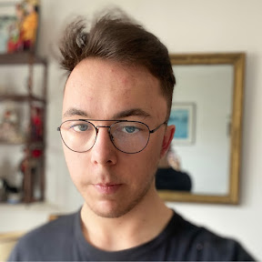

Profil
- A propos de moi
Je m'appelle Charles de feligonde, j'ai 19 ans, je suis étudiant à l'EPSI - Paris La Défense. Je suis en deuxième année du programme Socle Numérique que propose l'EPSI avec option BTS SIO (Services Informatiques aux Organisations) avec la spécialité SLAM (Solutions Logicielles et Applications Métier). Plus jeune, jamais je n'aurai pensé entrer dans ce domaine et c'est en dernière année de lycée général, par manque d'idée pour mon avenir, que l'idée de me tourner vers ce domaine m'est venue. Aujourd'hui, c'est grâce à ma curiosité et ma créativité que mes choix m'ont amenés vers le développement.
- Expériences professionnelles
J'ai pu effectuer un stage d'un mois dans une association lors de ma première année d'études. Ce stage s'est déroulé au sein de l'association Soleil d'Enfance durant lequel j'ai pu faire une refonte du site. Refonte des fonctionnalités, le design, les informations, et le moderniser afin d'améliorer au maximum l'expérience utilisateur.
- Projets
- Développement de fonction pour un BOT de trading en Python
- Développement d'une interface helpdesk déstiné au service informatique de l'école
- Mise en place d'une infrastructure système et réseau pour un environnement web
- Workshop - Développement d'une page de journal afin de créer une fake news à but préventif